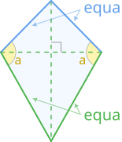

Kite
(Jump to Area of a kite or Perimeter of a kite)
A kite is a flat shape with four straight sides.
It has two pairs of equal-length sides.
Each pair of sides is adjacent (next to each other).

It often looks like
a kite!
- Two pairs of sides
- Each pair is two equal-length sides that are adjacent (they meet)
- The angles are equal where the two pairs meet
- Diagonals (dashed lines) cross at right angles
- One of the diagonals bisects (cuts equally in half) the other
Play with a Kite:
Area of a Kite
Method 1:
 |
Multiply the lengths of the diagonals and then divide by 2 to find the Area: Area = p × q2 |
Example: A kite has diagonals of 3 cm and 5 cm, what's its Area?
Area = 3 cm × 5 cm2 = 7.5 cm2

Why does this work? Imagine drawing a box around the kite with width p and height q. The area of that box is p × q. The kite covers exactly half of the box's area.
Method 2:
 |
Multiply the lengths of two unequal sides by the sine of the angle between them: Area = a × b × sin(C) |

Example: You don't want to get wet measuring the diagonals of a kite-shaped swimming pool. So you measure unequal side lengths of 5.0 m and 6.5 m with an angle between them of 60°. What's its Area?
| Area | = a × b × sin(C) | |
| = 5.0 × 6.5 × sin(60°) | ||
| = 5.0 × 6.5 × 0.866... | ||
| = 28.1 m2 (to 1 decimal) |

Why does this work? The diagonal splits the kite into two identical triangles.
Each triangle has an area of 12 × a × b × sin(C).
Adding them together gives the whole area: a × b × sin(C).
Method 3:
If you can draw your kite, try the Area of Polygon by Drawing tool.
Perimeter of a Kite
The Perimeter is the distance around the edges.
 |
The Perimeter is 2 times (side length a + side length b): Perimeter = 2(a + b) |
Example: A kite has side lengths of 12 m and 10m, what's its Perimeter?
Perimeter = 2 × (12 m + 10 m) = 2 × 22 m = 44 m
Rhombus and Square
When all sides have equal length the kite will also be a Rhombus.
When all the angles are also 90° the kite will be a Square.
A Square is a kite? Yes! So it doesn't always look like the kite you fly.

A Dart
Dart
A concave kite is called a Dart